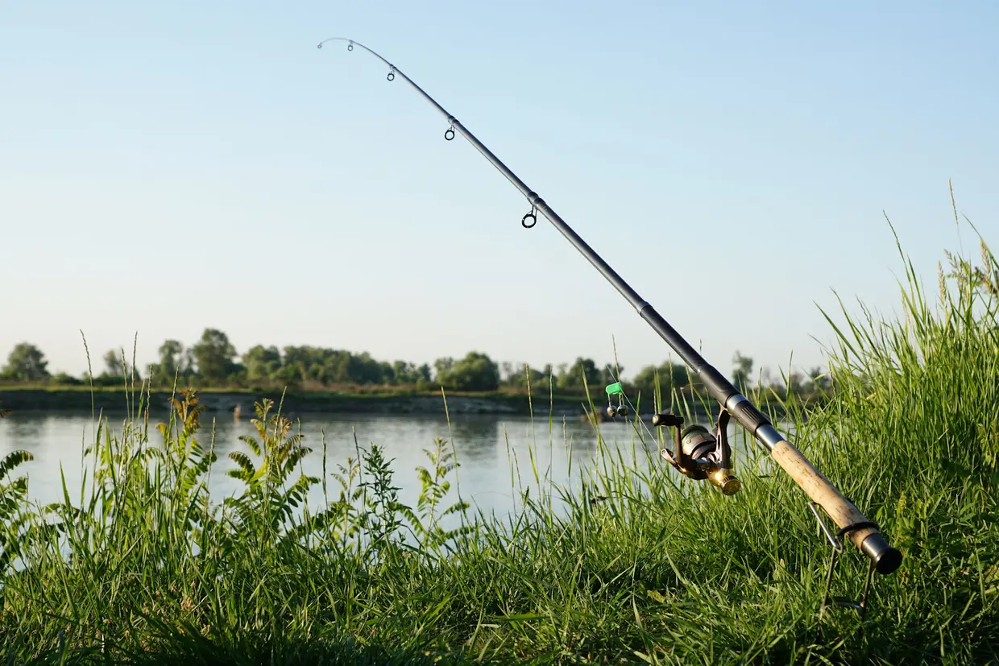
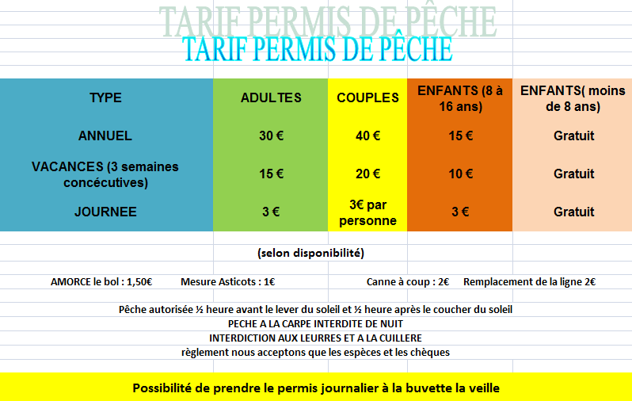

LA MARE DE L'ESSAY
PECHE

DANY REYNO PECHEUR AMATEUR vous apprends comment emeylé les cannes loués a la clientelle afin de l'occupé l'aprem
table des tarifs :

poisson pechable :
Carpes, Carassins, Gardons, Rotangles, Tanches, Anguilles, Brêmes, Ables, Perches
 Copyright deserved
Copyright deserved